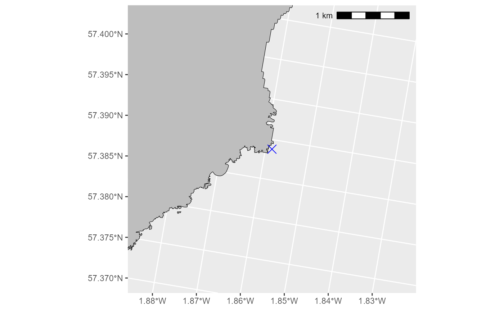
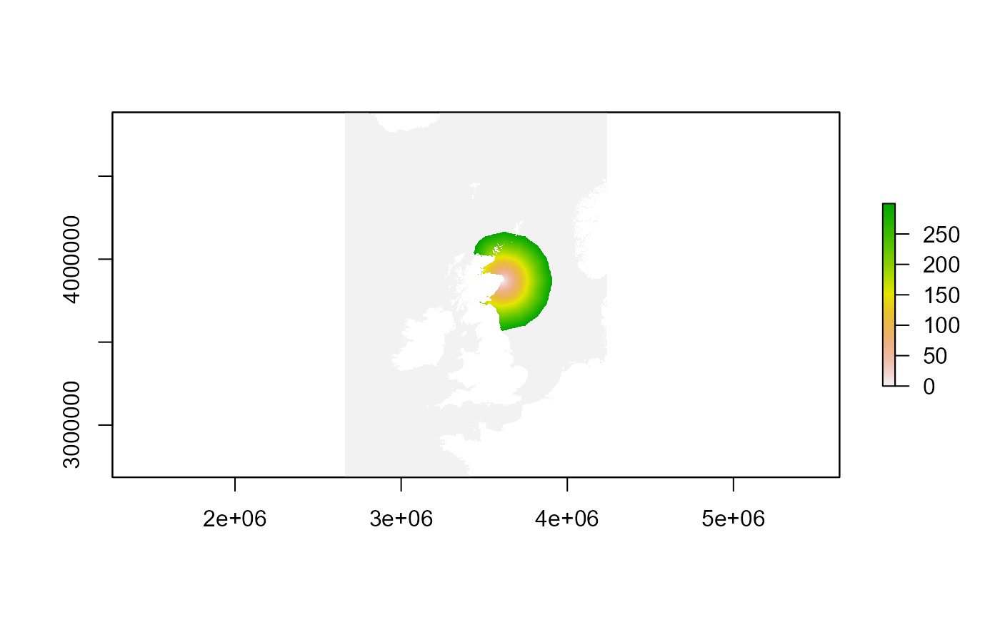
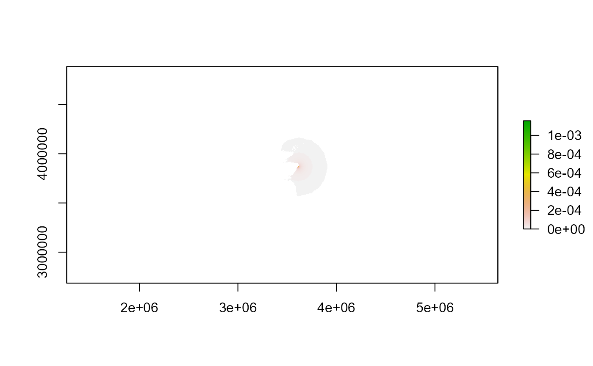
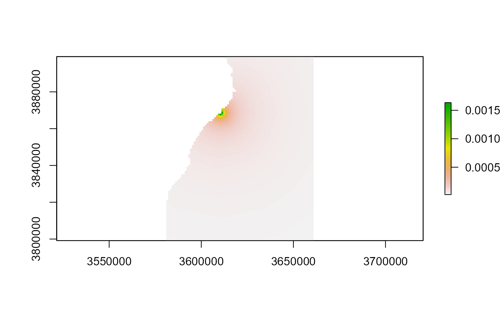
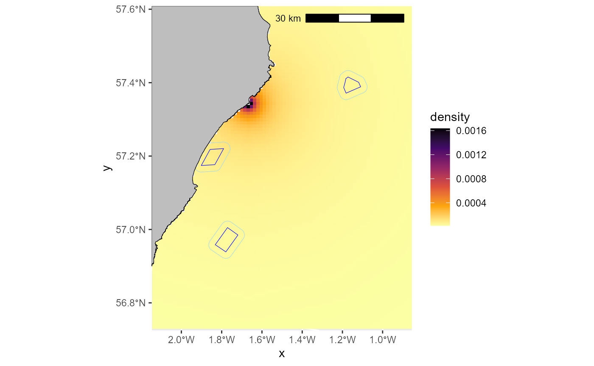
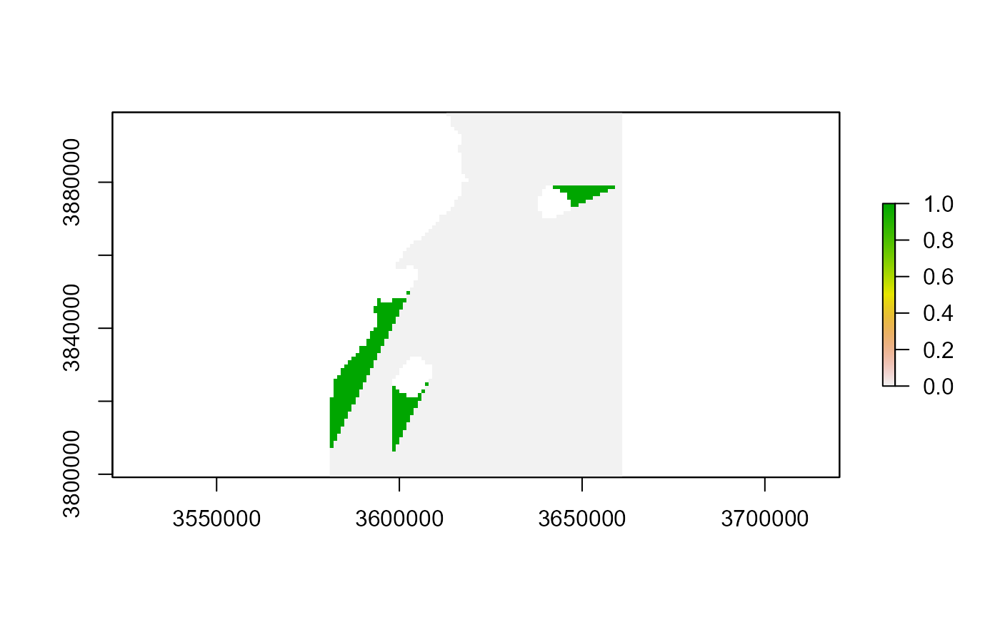

Example: step 1.1 - creating a density decay map
D_DensityDecayMap.RmdCreating density-decay maps
In cases where there is no local GPS data available users are recommended to estimate a bird density based on a distance-decay function, and use this as their bird distribution map in the model.
In the previous version of SeabORD, which ran on MatLab, the parameters to be used for creating your density-decay map would be specified in the interface. This is no longer incorporated within the code and users need to produce their own map.
We provide an example here of how this can be done, using similar parameters to those within the old version of SeabORD and the Cumulative Effects Framework (CEF). We also demonstrate how to assess the potential displacement that will occur given this map and a set of wind farms so that users can gain a better understanding of potential interaction in a given scenario.
This example is for kittiwakes at the Whinnyfold colony near Aberdeen, and the wind farms used are Aberdeen Bay, Hywind and Kincardine, but it should be relatively straightforward to implement this code with your own colony and wind farm footprints, as all you will need to supply is the colony coordinates and your own set of shapefiles for the wind farms.
Please note that the parameters we have used in the distance decay map creation (foraging range, “fr”, and percentage in foraging range, “pinfr”) are for example sake and you will need to make your own judgments here based on existing knowledge of the species and the locality.
This example will include the following steps:
- Housekeeping - loading packages and loading data into environment
- Create a distance by sea map - required for producing distance decay map
- Create distance decay map
- Plot the distance decay map with OWFs
- Assess the interaction with OWFs
1. Housekeeping
Load the required packages:
packages <- c("ggplot2", "dplyr", "sf", "terra", "gdistance", "ggspatial")
lapply(packages, library, character.only = TRUE)
#> [[1]]
#> [1] "ggplot2" "stats" "graphics" "grDevices" "datasets" "utils"
#> [7] "methods" "base"
#>
#> [[2]]
#> [1] "dplyr" "ggplot2" "stats" "graphics" "grDevices" "datasets"
#> [7] "utils" "methods" "base"
#>
#> [[3]]
#> [1] "sf" "dplyr" "ggplot2" "stats" "graphics" "grDevices"
#> [7] "datasets" "utils" "methods" "base"
#>
#> [[4]]
#> [1] "terra" "sf" "dplyr" "ggplot2" "stats" "graphics"
#> [7] "grDevices" "datasets" "utils" "methods" "base"
#>
#> [[5]]
#> [1] "gdistance" "Matrix" "igraph" "raster" "sp" "terra"
#> [7] "sf" "dplyr" "ggplot2" "stats" "graphics" "grDevices"
#> [13] "datasets" "utils" "methods" "base"
#>
#> [[6]]
#> [1] "ggspatial" "gdistance" "Matrix" "igraph" "raster" "sp"
#> [7] "terra" "sf" "dplyr" "ggplot2" "stats" "graphics"
#> [13] "grDevices" "datasets" "utils" "methods" "base"
library(seabORD)Load the data into environment:
# Load in the sea mask of the UK (shows which cells are on land and sea)
example_data_seamask <- seabORD::seamask_3035_example
#make a raster with the right dimension/proj/extents etc.
seamask_example <-
raster::raster(
nrows = example_data_seamask$metadata[["n_rows"]],
ncols = example_data_seamask$metadata[["n_cols"]],
xmn = example_data_seamask$metadata[["x_min"]],
xmx = example_data_seamask$metadata[["x_max"]],
ymn = example_data_seamask$metadata[["y_min"]],
ymx = example_data_seamask$metadata[["y_max"]],
crs = example_data_seamask$metadata[["crs"]]
)
#fill it with the data available
searast <- raster::setValues(seamask_example, #the raster
example_data_seamask$matrix) #the values
#Set the name of the layer
names(searast) <- "seamask_3035"
# Load in the UK coastline for plotting later:
coastline <- seabORD::cef_coast_3035
UK_coastline <- dplyr::filter(coastline, COUNTRY == "United Kingdom")
UK_coastline_LAEA <- sf::st_transform(UK_coastline, crs= "+proj=laea +lat_0=52 +lon_0=10 +x_0=4321000 +y_0=3210000 +ellps=GRS80 +units=m +no_defs" )
# Load in the wind farm polygons. In this case it is a shapefile containing the three wind farms closest to Whinnyfold (Hywind, Aberdeen Bay, Kincardine). You could upload any shapefiles you want - just ensure you transform them to the same coordinate reference system (EPSG:3035) and they are formatted in a similar fashion to the example.
ORDpolys <- seabORD::ORDpoly_example_wfold
# Load the flight gird correction layer as geographic correction is necessary for gdistance calculations of the class Transition as they are made with >4 directions in our instance. This correction layer has been pre-calculated and covers the full map we are using.
FlightGridcorrection_3035 <- seabORD::FlightGridcorrection_30352. Distance by sea map
First we set the colony location, in this case Whinnyfold, but you could change this to any colony around the UK that you wish to model. PLEASE NOTE: these calculations will not work if the set location is on land. It needs to be placed beside or on the sea cells so it is not completely obstructed by land cells which are defined as impassable. We recommend checking this with a plot.
# Set the location of our colony at Whinnyfold and transform it to LAEA projection:
colony <- sf::st_as_sf(data.frame(lon = -1.85849, lat = 57.388807), coords = c("lon", "lat"), crs = 4326)
colonyLAEA <- sf::st_transform(colony, crs = "EPSG:3035") # Convert to LAEA Europe
# check the colony location is beside sea cells:
expand_km <- 2 # how far to expand the plot in km on either side of the colony
ggplot2::ggplot() +
ggplot2::geom_sf(data=UK_coastline_LAEA, fill = "grey", colour="black") + # coastline
ggplot2::geom_sf(data=colonyLAEA, colour="blue", pch=4, size =4)+ # colony
ggplot2::coord_sf( #
xlim=c(sf::st_coordinates(colonyLAEA)[,1] - (expand_km*1000), sf::st_coordinates(colonyLAEA)[,1] + (expand_km*1000)),
ylim=c(sf::st_coordinates(colonyLAEA)[,2] - (expand_km*1000), sf::st_coordinates(colonyLAEA)[,2] + (expand_km*1000)), expand = FALSE) +
ggspatial::annotation_scale(location = "tr", width_hint = 0.5)
# Create you distance by sea map using the function calc_dist_restricted
DBS_map <- seabORD::calc_dist_restricted(mymap=searast,
obspolys=NULL, # not including ORDs this time
targetcoords = colonyLAEA, #
FlightGridcorrection_3035 = FlightGridcorrection_3035,
directions=16, obspenalty=1e+08,
maxdist=300)
plot(DBS_map)
3. Distance decay map
Now that we have a distance our distance by sea map we have our constituent inputs ready to create the distance decay map.
The inputs which it takes are as follows:
- dmap - the distance by sea map which we just created in step 2
- fr - foraging range (km)
- pinhalf - the proportion of the foraging range within which half of the UD lies
The function then returns a raster containing the distance-decay map.
# Set your parameter inputs for distance decay map function:
dmap <- DBS_map
fr <- 150 # set as something sensible for this speces
pinhalf <- 0.95 # value between 0 and 1
# run function:
DD_map <- seabORD::calc_birddensmap_dd_pinhalf(dmap, fr, pinhalf)
# plot to view:
plot(DD_map)
# cropped plot:
km_to_left <- 30
km_to_right <- 50
km_up <- 30
km_down <- 70
crop_extent_raster <- raster::extent(sf::st_bbox(colonyLAEA)$xmin - (km_to_left * 1000),
sf::st_bbox(colonyLAEA)$xmin + (km_to_right * 1000),
sf::st_bbox(colonyLAEA)$ymin - (km_down * 1000),
sf::st_bbox(colonyLAEA)$ymin + (km_up * 1000))
DD_map_cropped <- raster::crop(DD_map, crop_extent_raster)
plot(DD_map_cropped)
4. Plotting
Now that we have made the density decay map, let’s plot it with the ORD footprints to check that they overlap.
# create a dataframe of your ddmap as ggplot requires it in this format:
DD_map_cropped_df <- as.data.frame(as.data.frame(DD_map_cropped, xy=TRUE)) # Converts to x, y, value
colnames(DD_map_cropped_df) <- c("x", "y", "density")
# Add a 2km buffer to the ORD footprint and reformat
bufferwidth <- 2
ORDpolys_with_buffer_1 <- sf::st_buffer(ORDpolys, bufferwidth * 1000)
ORDpolys_with_buffer <- ORDpolys_with_buffer_1 %>%
sf::st_cast("POLYGON") %>% # Convert to individual polygons
dplyr::mutate(names = paste0("ord", dplyr::row_number())) %>%
dplyr::rename(x = geometry)
# crop the UK coastline to the extent set above to reduce plot rendering time
UK_coastline_cropped <- sf::st_crop(UK_coastline_LAEA, crop_extent_raster)
#> Warning: attribute variables are assumed to be spatially constant throughout
#> all geometries
# plot everything together:
ggplot2::ggplot() +
ggplot2::geom_raster(data=DD_map_cropped_df, ggplot2::aes(x=x,y=y, fill=density)) +
ggplot2::scale_fill_viridis_c(option = "B", direction = -1,
# begin = 0,
# end = 1,
na.value = "transparent") +
ggplot2::geom_sf(data=ORDpolys, colour="blue", fill=NA) +
ggplot2::geom_sf(data=ORDpolys_with_buffer, colour="lightblue", fill=NA) +
ggplot2::geom_sf(data=UK_coastline_cropped, fill = "grey", colour="black") +
ggplot2::coord_sf(
xlim=c(crop_extent_raster[1] , crop_extent_raster[2]),
ylim=c(crop_extent_raster[3], crop_extent_raster[4]), expand = FALSE) +
ggspatial::annotation_scale(location = "tr", width_hint = 0.5)
5. Interaction assessment
Now using the “calc_dist_restricted” function again, we can calculate the distance to all cells, but this time including the obstruction of the wind farms. The output is a map with distance to the colony from all cells, but including the extra distance to fly around wind farm buffers, which can give us a sense of barrier effects. We can also estimate the percentage of birds that will be displaced per time step, which can be used to estimate the number of birds being displaced by multiplying by the colony size.
# First lets do a quick assessment of the percentage of the density decay map being occupied by the ORDs and their buffers.
maskedmap <- raster::mask(DD_map, ORDpolys_with_buffer)
raster::cellStats(maskedmap, stat = "sum")
#> [1] 0.01156287
# this tells us that just over 1% of the normalised raster is being occupied by ORDs in this case.
# Run function with obstruction from ORDs:
DBS_withORDs <- seabORD::calc_dist_restricted (
mymap = searast,
obspolys = ORDpolys_with_buffer,
targetcoords = colonyLAEA,
FlightGridcorrection_3035 = FlightGridcorrection_3035,
directions = 16,
obspenalty = 1e+08, maxdist = 300)
# "smalltol" is a threshold set to remove biologically implausible. E.g., 0.1 implies a distance of 100m which isn't overly important, so we recommend this as a minmum
smalltol <- 0.01
# create a layer which is the difference between with and without ORDs:
obstructed <- ((DBS_withORDs - DBS_map) > smalltol)
obstructed_cropped <- raster::crop(obstructed, crop_extent_raster)
plot(obstructed_cropped)
# calculate percentage in ORD and buffer, and the percentage in the "shadow"/barriered area:
out <- data.frame(
pc_in_ORD_plus_buffer = 100 * sum(unlist(raster::extract(DD_map, ORDpolys_with_buffer)), na.rm=T),
pc_in_ORD_shadow = 100 * sum(DD_map[(DBS_withORDs - DBS_map) > smalltol], na.rm=T))
out
#> pc_in_ORD_plus_buffer pc_in_ORD_shadow
#> 1 1.156287 3.600242